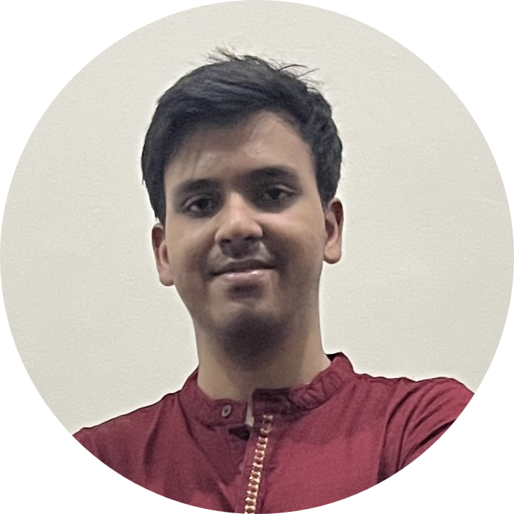

Somanshu Rath
- CSE Undergraduate Student
- Department of CSIS
- BITS-Pilani Goa Campus
- Goa, India 403726


|  |
Somanshu Rath
|
|
|
|
||
|
|
I am a first-year undergraduate student pursuing Bachelor's in Computer Science at BITS Pilani K.K. Birla
Goa Campus.
I am passionate about competitive programming and have recently delved into web development, which has
resulted in the creation
of this website.
The Last of Us is, without a doubt, the greatest video game I've ever played. And Avicii, my favorite
artist.
My upcoming plan is to dive deeper into the world of web development and subsequently explore Python and its
libraries.
I'm particularly interested in web frameworks like Django and Flask, which are widely used for building web
applications.
In addition, I plan to explore data structures and algorithms to further enhance my competitive programming
skills.
------ Made with 🍵 by Somanshu ------